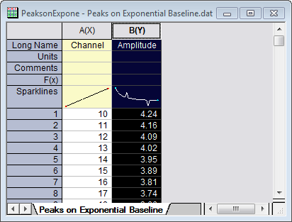
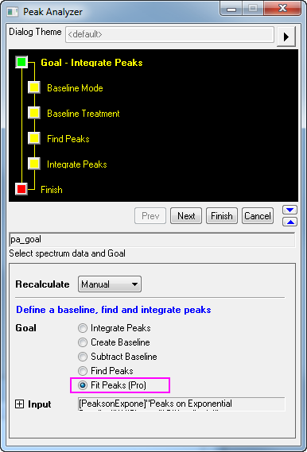
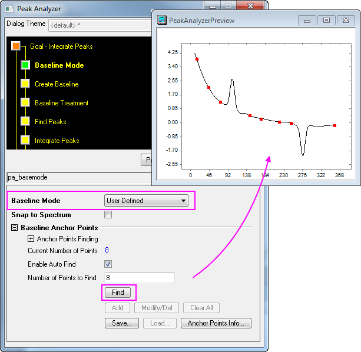
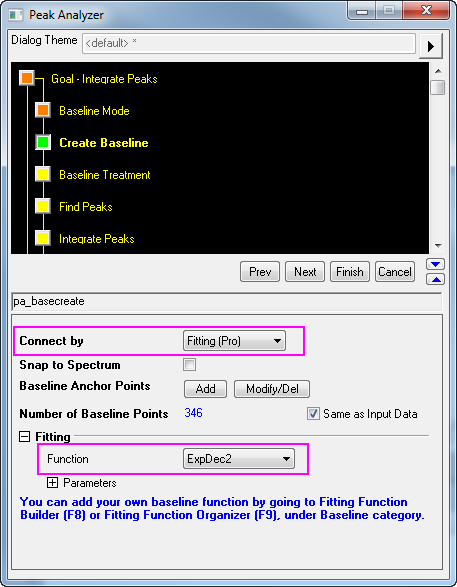
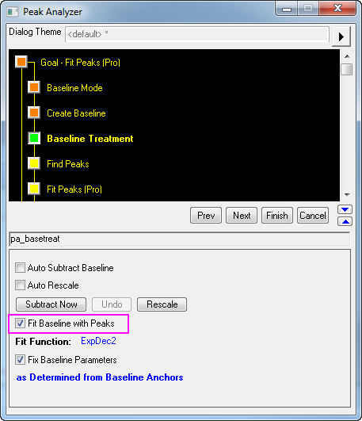
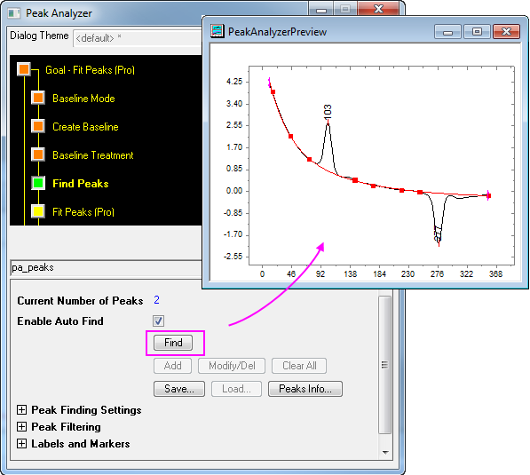
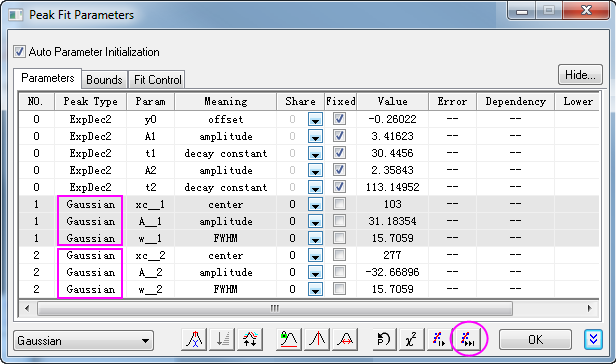

Peaks anpassen mit Basislinie
PeakFitting-Baseline
Zusammenfassung
In OriginPro kann der Dialog Peaks analysaieren mehrere Peakanpassungen mit mehreren Optionen für die Subtraktion der Basislinie durchführen.
Es gibt zahlreiche Wege, um eine Basislinie für Ihre Spektrumsdaten zu erstellen. Sie können einige Ankerpunkte auswählen und sie dann mit einer Funktion anpassen. Die Anpassung der Basislinie kann zusammen mit der Peakanpassung durchgeführt werden.
Origin-Version mind. erforderlich: OriginPro 8.0 SR6
Was Sie lernen werden
- Anpassungen der Peaks durchführen
- Basislinie anpassen
Schritte
- Öffnen Sie ein neues Arbeitsblatt und importieren Sie die Datei <Origin-Verzeichnis>\Samples\Spectroscopy\Peaks on Exponential Baseline.dat.
- Markieren Sie die zweite Spalte des Arbeitsblatts.

- Wählen Sie dann Analyse: Peaks und Basislinie: Peaks analysieren, um den Dialog Peaks analysieren zu öffnen.
- Wählen Sie die Option Peaks anpassen (Pro) auf der ersten Seite in der Gruppe Ziel. Klicken Sie auf Nächstes, um zur Seite Modus Basislinie zu gelangen.

- Wählen Sie auf der Seite Modus Basislinie in der Auswahlliste Modus Basislinie die Option Benutzerdefiniert. Klicken Sie auf die Schaltfläche Finden in der Gruppe Ankerpunkte der Basislinie. Es sollten acht Ankerpunkte gefunden werden. Klicken Sie dann auf Nächstes, um zur Seite Basislinie erzeugen zu gelangen.

- Wählen Sie auf der Seite Basislinie erzeugen die Option Anpassen (Pro) in der Auswahlliste Verbinden mit. Wählen Sie in der Gruppe Anpassen die Option ExpDec2 in der Auswahlliste Funktion. Klicken Sie auf Nächstes, um zur Seite Behandlung der Basislinie zu gelangen.

- Aktivieren Sie auf der Seite Behandlung der Basislinie das Kontrollkästchen Basislinie mit Peaks anpassen. Klicken Sie auf die Schaltfläche Nächstes, um zur Seite Peaks suchen zu gelangen.

- Klicken Sie auf der Seite Peaks suchen auf die Schaltfläche Finden, um nach Peaks zu suchen. Es sollten zwei Peaks gefunden werden. Klicken Sie auf die Schaltfläche Nächstes, um zur Seite Peaks anpassen (Pro) zu gelangen.

- Klicken Sie auf der Seite Peaks anpassen (Pro) auf die Schaltfläche Fit-Steuerung, um den Dialog Peak-Fit Parameter zu öffnen.
- Stellen Sie sicher, dass im Dialog Peak-Fit Parameter beide Peaktypen Gaussian sind. Klicken Sie auf die Schaltfläche Fit bis konvergiert. Wenn die Anpassung durchgeführt ist, klicken Sie auf OK, um den Dialog zu schließen.

- Klicken Sie auf der Seite Peaks anpassen (Pro) auf die Schaltfläche Fertig, um die Analyse abzuschließen. Die Ergebnisse finden Sie in der Quellarbeitsmappe und dem Diagrammbericht.